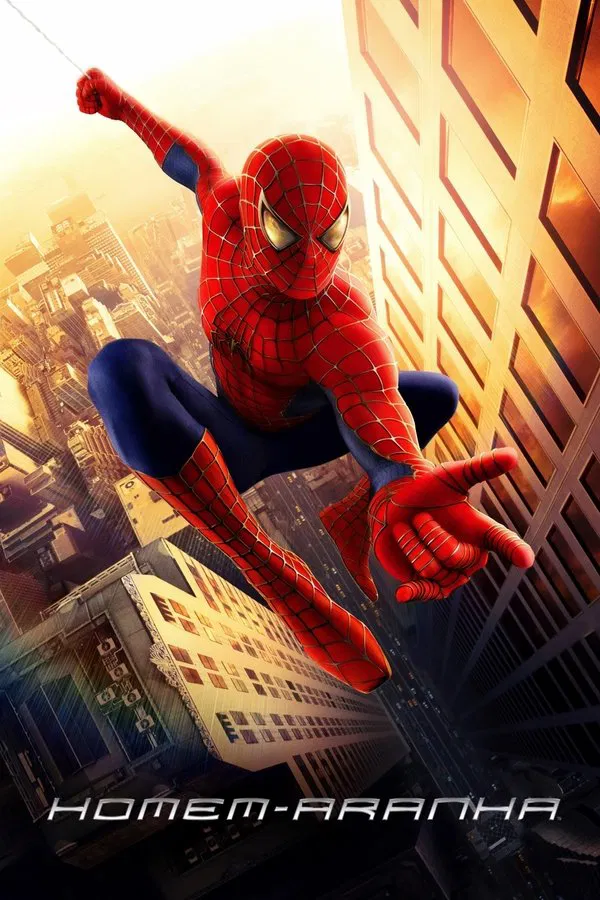

Homem-Aranha
Peter Parker é um jovem tímido e estudioso que, após ser picado por uma aranha geneticamente modificada, desenvolve habilidades sobre-humanas. Ao perder seu tio Ben por causa de um criminoso que deixou escapar, Peter decide usar seus poderes para combater o mal como o super-herói Homem-Aranha. Seu primeiro grande desafio é enfrentar o perigoso Duende Verde, que ameaça Nova York.
- Duração: 2h 1min;
- Classificação: 10 anos
- Data de Lançamento: 17 de maio de 2002;
- Direção: Sam Raimi;
- Roteiro: David Koepp (baseado nos personagens criados por Stan Lee e Steve Ditko);
- Orçamento: US$ 139 milhões;
- Bilheteria: US$ 825,8 milhões;
- Prêmios: Indicado a 2 Oscars (Melhor Som e Melhores Efeitos Visuais) tendo 17 vitórias e 65 indicações no total.
Atores Principais
- Tobey Maguire – Peter Parker;
- Willem Dafoe – Norman Osborn;
- Kirsten Dunst – Mary Jane Watson;
- James Franco – Harry Osborn;
- Cliff Robertson – Ben Parker;
- Rosemary Harris – May Parker;
- J.K. Simmons – J. Jonah Jameson.